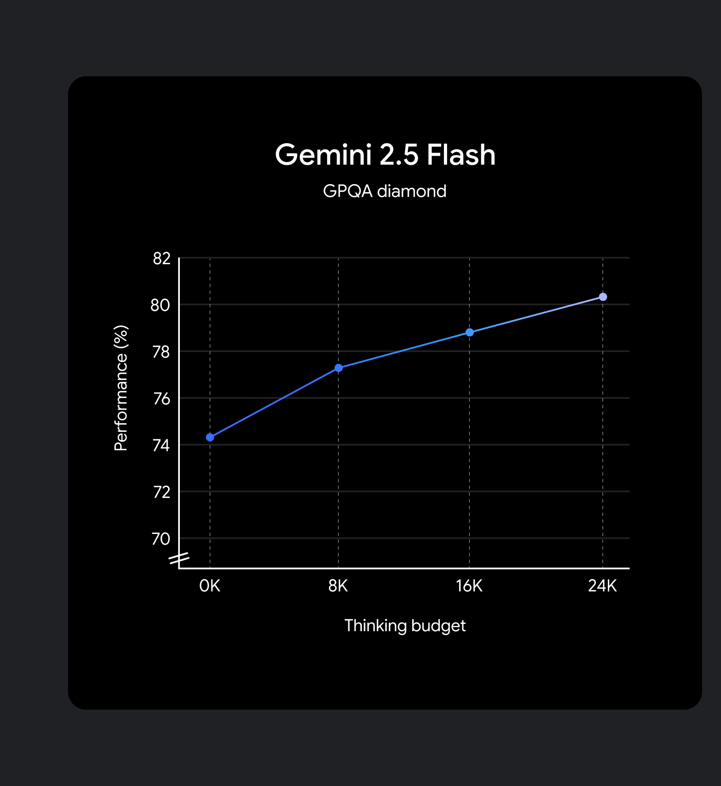

Reasoning & post-training
Gemini Thinking
Helped build and co-led an early team contributing to reasoning in Gemini, developing RL methods and the science and infrastructure for experiments.


GPQA Diamond performance with increasing thinking budget.
Gemini 2.5 Flash announcement · April 2025 ↗
Gemini Post-Training
Co-led a push on RL and token efficiency strategy, running the training that produced the September 2025 Gemini 2.5 Flash checkpoint. The release improved quality while using 24% fewer output tokens.


Quality, response time, and token usage on Artificial Analysis evaluations.
Gemini Flash update · September 2025 ↗